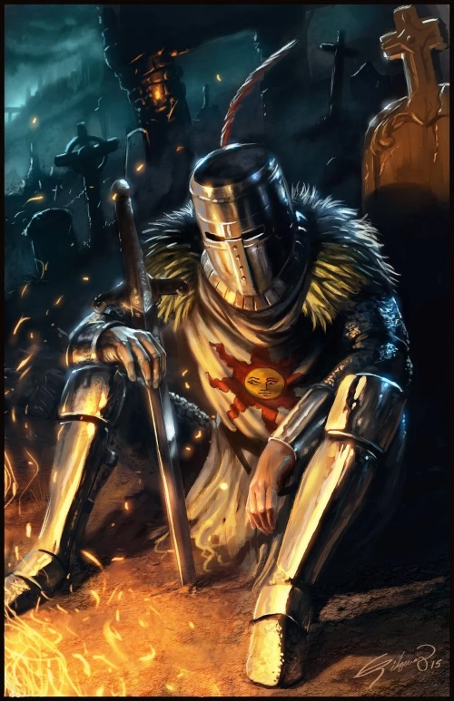

Link para a ilustração no perfil dele: EldritchPunk
Acredito que esse seja o primeiro boss que dá um certo trabalho pro jogador. O mais engraçado é que eu imagino que o player esteja todo feliz achando que vai terminar bem a luta, aí vem a segunda gárgula :> .
A chefe que virou uma waifu de boa parte dos jogadores :B. A luta é bem interessante, e pra mim a parte mais memorável foi a criatividade dos desenvolvedores na hora de criar as mecânicas dela
A luta contra os four kings realmente é um desafio. Ter que lidar com o tempo que ela se estende, e a forma como eles lutam é bem trabalhoso.
Great Grey Wolf Sif
A luta contra o sif é marcante mais pela lore do que pelo combate. É triste demais quando você percebe que...
Ornstein and Smough
Estes bosses é bem fácil de dizer o que é memorável: a dificuldade da luta (que é bem mais difícil que a luta contra as duas bell gargoyles).
Artorias
Uma luta memorável tanto pela dificuldade quanto pela tristeza que você sente quando conhece a lore do chefe.
Kalameet
Esse aí é lembrado pela dificuldade mesmo.
Manus
Um caso similar ao do Artorias, porém considero esse boss o mais difícil do jogo.
NPCs
Solaire de Astora

Um NPC tão bacana, e que te ajuda tanto <3
The fairy lady
Apenas tristeza meu deus...
Siegmeyer de Catarina
Outro NPC que é um grande amigo do jogador. Ele, assim como o solaire, sempre aparece quando menos se espera. Apenas queria que o final dele fosse diferente...
Gough olhos-de-falcão
E finalizando essa página sobre Dark Souls, o último NPC que venho comentar é esse gentil gigante. Uma pena que ele tenha ficado cego, mas mesmo assim continua incrível caçando dragões com seu arco.